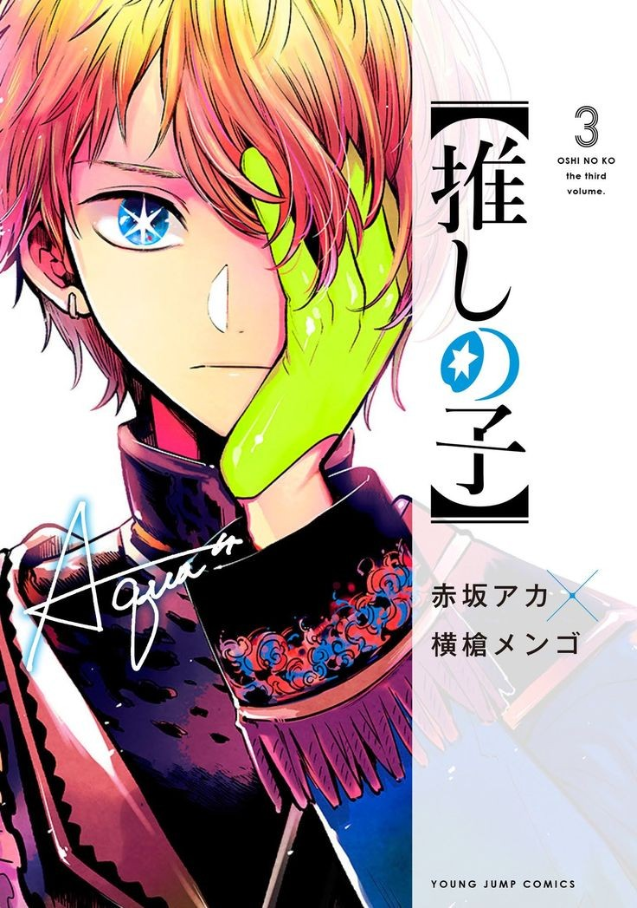

Oshi No Ko
Genre:Drama, Supernatural, Sc-Fi, Comedy
Dalam dunia hiburan, selebriti sering menunjukkan versi berlebihan dari diri mereka sendiri kepada Publik Menyembunyikan pikiran sejati mereka dan berjuang di bawah kebohongan rumit. Penggemar Membeli ke dalam fabrikasi ini mandi idola mereka dengan cinta abadi dan dukungan, sampai sesuatu Merusak ilusi.
Bintang yang baru berusia 16 tahun, Ai Hoshino, dari grup idola pop B Komachi, membuat Dunia terpesona; Namun, ketika dia mengumumkan hiatus karena masalah kesehatan, berita itu Menyebabkan banyak orang menjadi khawatir
Mulai Membaca